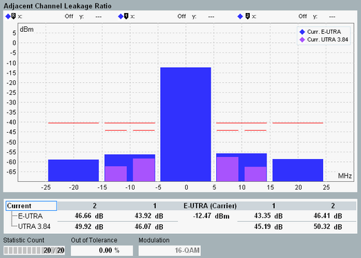

The adjacent channel leakage power ratio (ACLR) results are displayed in a diagram and as a table of statistical results.
It is configurable which types of adjacent channels are measured and displayed, see "ACLR > Select ACLR".

The diagram shows the mean power in the assigned E-UTRA channel as central bar. The other bars indicate the mean powers in adjacent channels. Either E-UTRA channels with the same bandwidth as the carrier, or UTRA channels with the indicated bandwidth (1.28 MHz, 3.84 MHz, 7.68 MHz). All values are absolute power levels in dBm.
The limit lines in the diagram take account of the configured absolute and relative limits. For each channel type, both limits are calculated. The less stringent limit applies and is displayed as limit line.
The relative ACLR results are calculated from the measured powers and displayed in the table below the diagram. According to 3GPP TS 36.141, the ACLR is defined as the mean power in the assigned E-UTRA channel divided by the mean power in an adjacent channel. The mean power in the assigned E-UTRA channel is also displayed.
The filters used for the ACLR measurement are compliant with 3GPP TS 36.141. According to this specification, ACLR tests must be carried out at maximum output power of the eNodeB.
For additional information, refer to "Common View Elements".